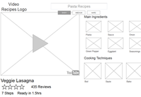
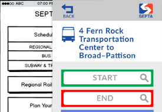
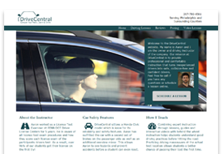
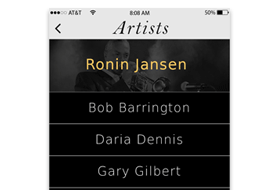
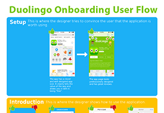
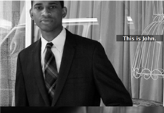

UX & Research

Recipe Card Application
The recipe card app is an aggregator of YouTube recipes. It presents users with recipe cards one at a time, which they can quickly scan, then click or swipe through until they find one which they like. It allows users to quickly find inspiration and visual guidance for recipes which fit their needs and cooking experience level without needing to read lots of detail.

SEPTA App
The SEPTA app is a native application that brings SEPTA directly to users with access to schedule information, real-time updates, trip planning, fare options, social media connections, and Customer Service. This is my proposed redesign of the schedule information user flow to facilitate accessibility for users with glaucoma and other vision problems.

DriveCentral Website
DriveCentral is a company that offers lessons to drivers in the Philadelphia area. However, their website's organization and overabundance of boilerplate content makes it hard for users to find the right information. In addition, the sites branding did not appeal to the target audience.This is my proposed redesign of their website.

Philly Jazz App
Philly Jazz is a native app which serves as a guide for Jazz in the city of Philadelphia. After downloading and trying to use it, I quickly found that it was not very usable, had broken functionality and its UI design had not been updated beyond the time of the first iPhone. This is my proposed redesign of the Philly Jazz app.

Duolingo's Onboarding Process
I created an infographic to illustrate the onboarding process. I also wrote a medium article about my experience after downloading the app.

The Storytelling Project
The Storytelling project is a one page website I created to encourage employers to hire nonviolent ex-offenders to help support their reentry into society. This helps prevent the cycle of re-incarceration.